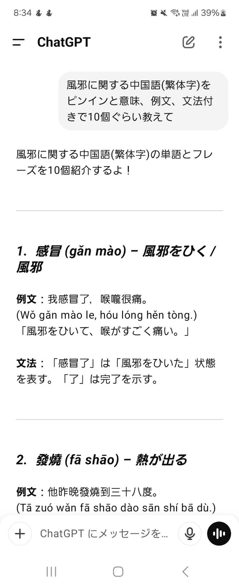
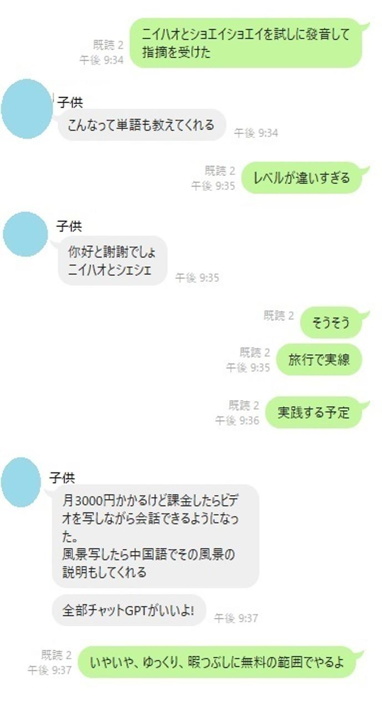

うるがいの話 ある日
最新: チャット【chat】【うるがいの話 ある日】とは 一日だけのプログです
『うるがいの話』の最新一日だけのプログで、通信料が少なく経済的だ。カニの画像をクリックすると全ての日付が載る『うるがいの話』サイトを表示します
|
|
【うるがいの話】 うるがい(ｳﾙｶﾞｲ urugai)とは、『もずくがに』の名前でとても大きくなります。 |
|---|---|
|
|
【カミマヤーの話】 猫のことを方言でマヤーといいます。カミマヤー（kamimayaa）とは、神の猫のことです。 |
|
【たながぁの音楽】 たながぁ（ﾀﾅｶﾞｰ tanagaa）とは手長えびのことで、何種類かあり大きいのは車 エビぐらいになります。 |

|
【ぶながぁの話】 ぶながぁ(ﾌﾞﾅｶﾞｰ bunagaa)とは、赤い髪の毛、赤い身体、そして身長は１ｍ２０ｃｍ ぐらい、川の蟹を食べているの目撃された。場所は沖縄県国頭郡大宜味村のと ある村僕の隣近所に住んでいる爺さんから、聞いた話です。 |
|
|
【ギーマの話】 ギーマ(giima)とは、山原の里山に咲くスズランに似た、 花を付けます。実は食べられます、 気が付くと口の周りが紫になっています。 |
2025年03月24日 (月）チャット【chat】
15:50
チャット【ｃｈａｔ】《おしゃべりの意》コンピューターネットワ
ーク上で、二人以上の相手とリアルタイムで短いメッセージをやり
取りするシステムやサービス。


あれ？、有料版ってなんだっけと確認する。有料版(ChatGPT Plus)
そうそう、プラスだった。そういえば、もう一人のコドモも有料版
を利用しているとか。フムフム、無収入だからな。ただいま、ボポ
モフォ（注音符号）を一所懸命に覚えてます、ただ、子供がピン音
（ピンイン）しか使ってないヨと言われた。チャットも、ピンイン
だけで説明している・・マ、いいか。
お賽銭の５０円が必要で両替をする、なぜか人が少なく両替機の前
でオロオロしている私に、行員が『１００枚までです、お釣りもで
ますよ』とホー、一万円いれて、５０円玉５０枚を２セット選択す
る、お！、５千円ジャン、オロオロ、やり直しを行員が丁寧に教え
てくれた。５０円玉は、お賽銭に使うのですよと、行員に礼を言う
。そのあと、子供が鼻炎の薬を買ってきてと、言われたのフジ薬局
へ、子供に言われた薬がないので、店員に教えてもらう。そしてサ
ンエーで買い物を済ませ、家に戻る。テレビをつけると高校野球が
８対６、そして７点が入り、・・・残念。そういえば、外を回った
所、やたら人が少なかった！、こういうことだったんだ。現役の頃
は、職場で野球観戦ができた、懐かしいぜ。